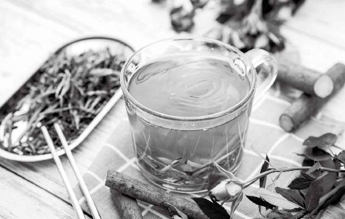

藿香正气水、九味羌活丸、通宣理肺丸、板蓝根冲剂、双黄连口服液、小柴胡颗粒都是家庭可以常备的中成药。

不管是感冒，还是感冒并发肺炎，在呼吸道疾病的不同阶段，有不同的症状，我们用的药都是非常不一样的。如果用错的话，很容易适得其反。我们可以把感冒分为这样几个阶段：
在风寒感冒初起时，感觉头晕、恶心，这种情况下用藿香正气水就可以。
如果风寒感冒比较重，浑身酸痛，连骨头都在痛，可以用九味羌活丸。
如果咳痰多，痰色白，可以用通宣理肺丸。
以上几种情况，如果不想吃药，想用食疗，都可以用葱姜陈皮水。
如果受了点风热，还没有其他症状，只是嗓子有点疼，这时候马上服一块板蓝根冲剂就可以（板蓝根冲剂有颗粒状的，有块状的，我个人经验是块状的效果更好一点），吃一次就行，不要多吃。
风寒感冒如果没及时治好，有可能进一步转化为风热感冒。嗓子痛，发热，头晕，可能还会咳黄痰。这时候可以用双黄连口服液（颗粒）。如果体温比较高，无论是否嗓子疼，都可以用蚕沙竹茹陈皮水。
有的人，在高烧的时候吃药就退热了，但退热之后又反复发热；这时体温不太高，一会儿烧一会儿不烧，会感觉明显的口苦。
在这种情况下，说明病在半表半里之间，一般会用到小柴胡颗粒。
例如，有些得新冠肺炎的患者说，觉得口苦得受不了，在这个阶段是可以用到小柴胡颗粒的。
双黄连：风热感冒、发热伴有咽痛时用，可以退热。风寒感冒禁用 !
板蓝根：扁桃体发炎初起，感觉嗓子疼，马上吃一块就不疼了。不要多吃。嗓子不疼不要吃！
藿香正气水：四时感冒常用药，感冒、低烧、伴有肠胃不适的，都可以用。伴有咽痛的感冒不宜用。
【成分】苍术、陈皮、厚朴(姜制)、白芷、茯苓、大腹皮、生半夏、甘草浸膏、广藿香油、紫苏叶油。
【功能主治】解表化湿，理气和中。用于外感风寒、内伤湿滞、头痛昏重、呕吐泄泻、肠胃型感冒。
藿香正气水，很多人对它有一个误解，认为它是用来解暑的，这是错的。
有一年，我在河北卫视录节目，是大冬天，演播厅实在太冷了，我就受寒感冒了。去药店买藿香正气水，药店的店员告诉我：“现在是冬天，谁卖藿香正气水呀？夏天才有。”这真的是让我非常惊讶。
其实，藿香正气水是治疗受寒以后引起的感冒的，它的适应证是什么呢？就是外感风寒、内伤饮食。不管你是受了风寒，还是吃了生冷的东西，胃肠受了寒，都可以用藿香正气水。
我们不要用它来解暑，它不是清热的，它是用来祛寒湿的，我们在家里可以常备它。
主药是藿香（广藿香），它是芳香化湿的一种香草。在新冠肺炎疫情期间，预防和治疗的药方中常用到藿香，功效卓著。
藿香非常芳香，也是现代香水的定香剂，我做香包、沐浴都很喜欢用它，因为它既香又能抗毒杀菌，对于防流感、防皮肤病都很有好处。在新冠肺炎疫情期间，我就是每日用藿香沐浴液来洗手，加强防护。
接下来是紫苏，它可以解表散寒、行气和胃。孕妇呕吐吃点紫苏也很好。
紫苏也是蔬菜，我家花园里就种着很多紫苏，夏季会用紫苏叶子拌饭吃。还有就是泡在泡菜坛子里，它可以养泡菜水。冬天时，虽然没有紫苏叶子了，可是还有紫苏梗。紫苏梗可以用来和其他中药配在一起做沐浴包、香包。
再下来就是陈皮和茯苓，这两样我说得很多了，健脾祛湿，当成保健食物，全家人经常吃也是很好的。
方子中还有苍术、白芷、厚朴，这些都是祛湿的好药，也是药食同源的，我们平时用，可以拿来做香包和沐浴包。
另外，方中的大腹皮和生半夏，也有祛湿的作用。
所以说，藿香正气水能很好地祛寒湿，而且它10味药里面有8味是药食同源的（包括甘草）。这个方子真是妙极了。
我非常推荐藿香正气水，是因为我们一年四季的感冒，在不太重的情况下，基本上都是可以用藿香正气水治疗的。只要感觉受寒了，有点儿低烧，头晕，还有一点儿恶心，没有食欲，在嗓子不疼的情况下，你都可以喝一支藿香正气水试试。
它起效特别快，只要是感冒初起，一般一支就好了。
如果遇到藿香正气水吃了两三支都没有好转迹象，那么很可能是辨证错误，不是受寒引起的肠胃型感冒。
藿香正气有几种剂型，我最推荐的是最传统的水剂——藿香正气水。这是很多年轻人和小朋友最怕的。我记得我儿子小时候也怕这个，因为他，我配了一个食疗方子，就是“芫香正气水”（见本书第175页）。
藿香正气水虽然难喝，但真的是效果很好的。所以直到现在，我还要求我儿子在学校宿舍里准备两支，以备不时之需。可能他一年两年都用不上，但万一哪天受寒了，或者是同学受寒了，就可以给他们吃，一支就好（小朋友半支就够了）。
很多人喜欢用藿香正气滴丸，因为它很小，一下子就吃下去了， 比较好接受，也没有怪味。如果小朋友实在不愿意喝藿香正气水，藿香正气滴丸也是一种选择，只是它的效果来得稍微慢一点。如果你是感冒轻微的情况，吃它也就够了。
藿香正气水和藿香正气滴丸，我建议家里是要常备的，不要等到突发疫情时再去抢购，应养成家里常备中药、中成药的好习惯。
【成分】金银花、黄芩、连翘。
【功能主治】疏风解表，清热解毒。用于外感风热所致的感冒，症见发热、咳嗽、咽痛。
双黄连口服液是一种很好的用于风热感冒引起的发热、咳嗽的中成药。感冒时，如果发热、咳嗽，而且嗓子痛，鼻涕是黄的，可以用双黄连。
流感、支气管炎、肺炎、扁桃体炎、幼儿水痘……这些病如果有上面列举症状的，也是可以用双黄连的。
双黄连的名字让一些人误解为其中含有中药黄连。其实，它没有黄连，而是用了三种中药，各取开头的一个字来组成名字：
双花，也就是金银花，它花开成双，金银并蒂，所以别名叫“双花”。金银花清热解毒，我们夏天也可以泡茶喝（配上甘草比较好）。
黄芩，开的是蓝紫花，入药用的是它的根。黄芩有清热泻火、燥湿解毒、止血、安胎的功效。它是苦寒的，我们平时不食用，但是可以外用。黄芩是清肺火的，外用可以预防日光性皮炎，对于日晒后皮肤的镇定防敏很有效果。
连翘，它跟迎春花很像，黄色的，初春开花。入药用的是它的果。连翘的功效是清热解毒、消肿散结，是风热感冒常用的中药。
这三味药都是寒凉的，所以双黄连是一种比较寒凉的中成药。没事时不能随便吃它来预防病，脾胃虚寒的人吃了是会拉肚子的。
双黄连一定是在发热并伴有咽痛（必须有咽痛的症状才可用热药）时才能用，风寒感冒不可以用。
【成分】板蓝根。
【功能主治】清热解毒，凉血利咽。用于肺胃热盛所致的咽喉肿痛、口咽干燥，急性扁桃体炎见上述证候者。
每次有呼吸道疫病流行，比如SARS、甲流、禽流感、新冠肺炎……很多人就会跑去排队买板蓝根，甚至连国外的人也加入了这个抢购风潮。
2013年禽流感流行时，有些中小学用大桶熬板蓝根给学生喝。当时电视台注意到这个问题，专门请我去做一期纠错节目，澄清大家的误区。
一袋小小的板蓝根，仿佛能包治百病。其实它连感冒都不能治。
板蓝根不是用来治感冒的，而是用来治咽喉肿痛的。
它是寒凉的，治病都不能多喝，平时更不能用来预防。孩子们天天喝它，脾胃受寒以后，抵抗力反而会下降。
什么时候可以用板蓝根呢？
如果受了点风热，感觉嗓子突然痛起来，马上喝一包，或者感冒合并扁桃体感染了，咽喉红肿疼痛，可以用板蓝根，但注意“中病即止”，喝一两次不太痛了，就不要喝了。